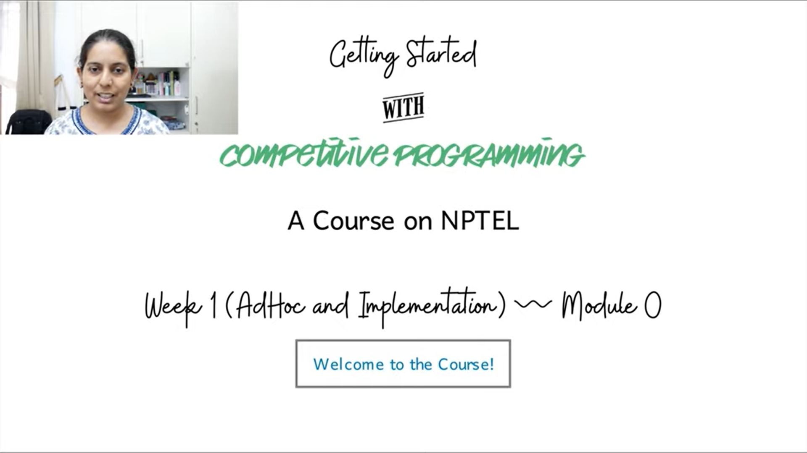
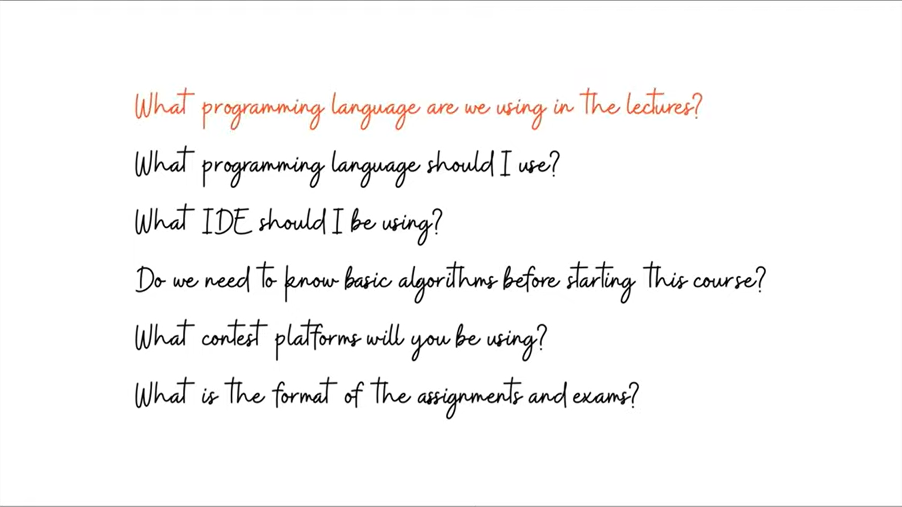

Welcome and Initial Setup
Lecture - 00
Welcome and Initial Setup
(Refer Slide Time: 00:11)

Hi, welcome to the NPTEL course on getting started with Competitive Programming. This is the first week of the course, and this is the very first video. So, let me take this opportunity to welcome you to the course and to say thank you for joining us. This should be an exciting journey through a variety of contest problems as we go along.
The first week focuses on problems whose solutions are based on AdHoc methods or their direct implementation problems. It is to say that specifically, you do not need any background and algorithms to be able to tackle these problems. The intention of doing this was to give ourselves some time just to get set up to get used to the modalities of the course and basically have some fun.
In this lecture, we will not be solving any specific problems. But we will be addressing some of the most frequent questions that came up in the Discord community, launched for this course a couple of weeks ago. In case you missed the announcement, there is a link to the Discord community in the description of this video. It is an invite link, which you can click to join the community.
So, if you have not done so already, please do that. There is an introductions channel, and we would love it if you could just introduce yourself in that channel and meet your fellow learners in this course by doing that. There is also a channel for general questions. So, any questions that are related to the course at large, please feel free to post them there. We also have a channel for every week.
I will request you to post any questions that you have related to the materials that we are covering in the relevant weekly channel. This will allow us to streamline our attention as we try to go through the posts on Discord. So, I hope to see you there, would look forward to it. In the meantime, let me just make a list of the questions that have been coming up. This will also be one way of getting you introduced to the general format of the course. So, let us go ahead and talk about some of these questions.
(Refer Slide Time: 02:37)

Alright, so I list the questions first all at once, and then we will try to tackle them one by one. By far, the most popular questions that we got were related to the choices of programming languages. For example, what languages are we using? What languages do we recommend for you to be using and so on? We also had a lot of questions about the pre-requisites, like, what do we expect you to already know before starting the course? I will also talk a little bit about the contest platforms that we will be using, as well as the format of the assignments and the exams.
Okay, the first question is: What programming language are we using in the lectures? The answer to this is C++ and Python. Depending on the problem, we will be describing the solution that is written in one of these two languages. To the extent possible, we will try to provide you with sample solutions in both languages for most problems.
But whenever this is not possible, it is usually not that hard to translate the main idea of the solution from one language to another. In fact, I would say that it is probably a good exercise. You can always access the code that we show you in the lectures on a GitHub repository, and there will be a link to the sample solutions in the description of each video.
Hopefully, everything is going to be fairly easy for you to find, as we go along. I would not recommend actually looking up these solutions first. But just keep it as a backup reference and try coding things yourself. In fact, even before we get into the implementation segment in any video, I would strongly recommend just pausing the video and trying to implement the solution yourself and coming back only if you are stuck. Often, we will try to cover the most common mistakes that are bound to happen while coding up a particular kind of solution. So, we hope that you find that helpful.
The second question is: What programming language should you use for this course? My answer to that would be whatever programming language you are already comfortable with should be great. On the NPTEL platform, we will have some programming assignments and solutions to those that can be uploaded in C, C++, Java, or Python. As long as you are familiar with one of these languages, that should be enough for our official assignments.
But you are probably going to be doing a lot of programming outside of the NPTEL assignments. You will be participating in contests on platforms like CodeChef, Code forces, Google Code Jam, and so on. Most of these platforms do support the languages that I have just mentioned and many more.
Many of these platforms will even give you extra time for Python submissions, just to compensate for the fact that it can be slower. Of course, not all platforms do this. So, you have to be careful about checking if this is important to you. Specifically, can you get away with just knowing Python? For competitive programming, I think absolutely, yes. A lot of contest programmers have gone quite some distance using languages like Python and other non-mainstream languages. So, the choice of language should not really be a hurdle here.
I think working with something that you are comfortable with is already a bigger advantage than any other gains that you might make when you are simultaneously trying to learn the syntax of the language as well as the other algorithmic aspects of the problem that you are trying to solve.
Of course, if you want to use this course as an excuse to pick up a new language and if that language happens to be C++, by all means, it is definitely a great choice. But just be mindful of the fact that it is going to be some more work. If you are not familiar with any programming language at all and you have to pick one, then C++ and Python seem to be the most natural choices, and they both have their own advantages.
If you plan to be serious about competitive programming and pursue it long-term, then making the investment in learning C++ is probably a good idea. On the other hand, if you just want to get up and running quickly, then Python may be the better choice because it is generally a friendlier language and is easier to pick up, to begin with.
I should say though that in this course, we do assume familiarity with some programming language. This is not a programming languages course. So, it does not matter which language you know, but as long as there is some language that you are comfortable coding in, I think that would be very helpful. If this is your first time actually coding, then you might find that this course is a little more challenging for you, than at least we intended for it to be. So, feel free to come back to it after completing the first course in programming.
The third question is: Do we have a specific recommendation for an integrated development environment (IDE)? Most people who code like to use an editor that is designed for programmers with, at least, the basic features like syntax highlighting, quick access to compilation, and other tasks that you expect to do frequently.
So, I definitely recommend the use of some specialized editor. It does not matter which one, if there is one that you are using, that you are already comfortable with, I see no compelling reason to switch. This is largely a matter of personal taste and there are definitely a lot of different options. But I do recommend using one, it could be anyone. If you are coding in, say something like Notepad, then I think you will find this to be a very significant upgrade. The good thing is that there are lots of choices ranging from traditional choices like vi and Emacs, all the way to more contemporary options like VS Code and Sublime Text, Atom, and so on.
One good thing about all of these options is that they are cross-platform and are typically available on the most popular operating systems. So, you should have no trouble finding and downloading the software. They are also supported by really large and passionate communities. So, if you are stuck with something, it will usually be easy to find help.
If you are just getting started and you are overwhelmed by all these options, I would recommend downloading something like VS Code and just getting started for the reason that it is, it is a very user-friendly choice. It is easy to get started with but at the same time, it is quite powerful, and you can discover its features as you go along, instead of being overwhelmed right at the start. So, enjoy getting set up. I think this is a useful thing to invest a little bit of time in initially. Hopefully, you can set something up that works really well for you.
The next question is: Do we need to know basic algorithms before starting this course? The short answer to this is, yes, this would definitely be ideal. The reason for this is that every video in this course is going to focus completely on solving a contest problem, and we will not really be covering algorithms separately. But at the same time, we will be using many of these algorithms that you would learn typically in an algorithms course, say algorithms like BFS, DFS, minimum spanning trees, shortest paths or network flows, these are all going to come up as solution strategies.
We will be mostly focused on why these solutions actually work in the context of a problem. So, once again, we will not be proving why Prim’s algorithm actually outputs a minimum spanning tree. But our focus will be on arguing why a minimum spanning tree is the thing that you are looking for in the context of some problem.
Alright, the next question is: What contest platforms we will be using? In the lectures, we will be featuring problems from a number of different platforms, including Google Code Jam, CodeChef, Codeforces, AtCoder, and the UVA database of problems. You will find links to all of these platforms in the description of this video. I would suggest spending some time right now just setting up your accounts on all of them and familiarizing yourself a little bit with the layouts of these websites. So, you should know where the active contests are where you can find the editorials, where you can submit your code, where are the contest archives, and things like that. I think this will be useful as you go along.
The final question: What is the format of the assignments and exams? Every week, we will have assignments that are in the form of multiple-choice questions, usually based on some contest problems. The questions will address various aspects of the problem, including observations that could lead you to a solution, discussions of possible solution strategies, what are their running times going to be, are these running times good enough for these input limits, and questions of that sort. There will also be programming assignments on the NPTEL platform for most weeks, and we will let you know just in case there are weeks where we do not have programming assignments.
Apart from these programming assignments, I would definitely encourage you to keep solving contest problems on other platforms outside of NPTEL and get as much practice as you can. For this, we will have some recommended problems every week to try out based on that week’s theme. These are completely optional and we will have no way to track them. But I hope that you will be able to make time for them because the more you practice, the better you are going to get at this.
As for the exams, we will only have multiple choice questions or short answer questions, questions with numeric answers. None of these questions will require you to write a program to be able to answer them. At best, you may need to do some computations that can be done by a calculator which would be provided. So, there are no programming-based exams for this edition of the course. If you have been comfortable with the assignment problems, then the exams will have questions in a similar format and in a similar spirit.
So, I hope that all this information helps you prepare well for this course. But in any case, if you have any questions that remain, please do post them on Discord, and as I said earlier, do introduce yourself. I am looking forward to seeing you in the rest of the videos for week one. Thanks so much for watching and bye for now!